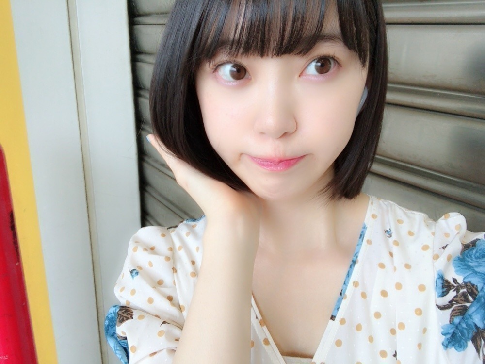

2018/0626Tue西瓜の渦
久しぶりの
ショートボブ！
後ろからボブの部分を
手でワサワサされます。笑
今のところ
真夏さんと葉月にされた(>_>)笑
したくなるシルエットなのかな？



毛先はぱっつん重めに
やや前下がりに切るのが
ボブ未央奈流です。

1つ終わって
髪もばっさりと。
軽やかなさわやかな気持ちです。
お仕事でとある所に来ています
凄く楽しかったなぁ〜
また解禁したら色々話させてください♡
じゃ、ぶーんっと帰りますか。
そうだ！明日のテレ東音楽祭出ます(>_>)
見てください☺︎
じゃね。
2018/06/26 14:12
コメント(459)
堀ちゃん
今日もお疲れ様です
ボブ未央奈とてもよきです
ワイヤレスイヤホンまでおしゃれにしてしまうのは流石です
明日のテレ東音楽祭は録画しておきます（多分仕事です）
でもレコメンは間に合うと思うのでまた楽しみにしてます
一気に蒸し暑くなりましたが熱中症や体調に気をつけて頑張って下さい（仕事もですが堀ちゃんの体調が一番大事です）
さっき仕事帰りに乃木撮も買いましたので、まとまった時間にしっかり目を通します（とりあえず堀ちゃんの歯磨きのやつはチェックした）
明日も頑張ろう！そして寝る！
ありがとうございました
今日もお疲れ様です
ボブ未央奈とてもよきです
ワイヤレスイヤホンまでおしゃれにしてしまうのは流石です
明日のテレ東音楽祭は録画しておきます（多分仕事です）
でもレコメンは間に合うと思うのでまた楽しみにしてます
一気に蒸し暑くなりましたが熱中症や体調に気をつけて頑張って下さい（仕事もですが堀ちゃんの体調が一番大事です）
さっき仕事帰りに乃木撮も買いましたので、まとまった時間にしっかり目を通します（とりあえず堀ちゃんの歯磨きのやつはチェックした）
明日も頑張ろう！そして寝る！
ありがとうございました
未央奈のショートはマジで神
ボブ最高！
結局何してもかわいい。。
乃木撮も神がかってるし
21枚目も楽しみにしてます‼
乃木撮も神がかってるし
21枚目も楽しみにしてます‼
未央奈ー❗️
ブログありがとう❗️
やっぱボブ未央奈好きだー❗️❗️
かわいい✨
21thシングル発売されるね
おめでとう❗️
その個別握手会の幕張にて
初めて未央奈と握手させていただきます
ホントにありがとうございます❗️
今からドキドキワクワクです
よろしくお願いします❗️
ゆうたんより
ブログありがとう❗️
やっぱボブ未央奈好きだー❗️❗️
かわいい✨
21thシングル発売されるね
おめでとう❗️
その個別握手会の幕張にて
初めて未央奈と握手させていただきます
ホントにありがとうございます❗️
今からドキドキワクワクです
よろしくお願いします❗️
ゆうたんより
お仕事である所？
21stシングルヒット祈願かな
ショートボブにあいすぎますね。
この世に敵なし
21stシングルヒット祈願かな
ショートボブにあいすぎますね。
この世に敵なし
みおなちゃん、やはりその髪型凄く似合ってる。夏ももうすぐだからその髪型いいね。
ひとつ気になったのですが、その唇の斜め感凄いですね。凄く曲がってる。
テレ東音楽祭楽しみにしてます。
頑張って。
ひとつ気になったのですが、その唇の斜め感凄いですね。凄く曲がってる。
テレ東音楽祭楽しみにしてます。
頑張って。
お仕事お疲れ様～
いつも可愛いさに癒される。
いつも可愛いさに癒される。
未央ちゃん明日めちゃめちゃ楽しみにしてるね！！
それのために学校水泳も頑張る。。。（笑）
はやくショートの未央ちゃん会いたい！！！！！
でもねツアーはミディアムでまわってほしかったなあとか思ったり。。。 （笑）
シングル発売も楽しみだあああ！！！！！からの握手会も！！はやく会いたいパワーほしい！！！！！！
それのために学校水泳も頑張る。。。（笑）
はやくショートの未央ちゃん会いたい！！！！！
でもねツアーはミディアムでまわってほしかったなあとか思ったり。。。 （笑）
シングル発売も楽しみだあああ！！！！！からの握手会も！！はやく会いたいパワーほしい！！！！！！
ボブ未央奈可愛いすね～～ 最近、乃木中のバックナンバーを見ていて思ったのが、20thのヒット祈願で、生駒ちゃんがコメントしているとき、ワイプの未央奈が、すごく嬉しそうな笑顔で居たのが、やっぱり、未央奈は生駒ちゃんが好きなんだなぁ～と思い、ほっこり、してます(///ω///)♪
ボブ似合うねぇ
ボブみおな最高！！！
そしてまた黒髪ってのが良いね！
黒髪ボブみおなほんとすき（笑）
巷でも可愛いって噂やお！
ワサワサしやすそう（笑）
テレ東音楽祭たのしみにしてる(*´-`)
ボブみおな最高！！！
そしてまた黒髪ってのが良いね！
黒髪ボブみおなほんとすき（笑）
巷でも可愛いって噂やお！
ワサワサしやすそう（笑）
テレ東音楽祭たのしみにしてる(*´-`)
未央奈ブログ更新ありがとう☆
ボブって髪をワサワサされやすそうな
感じがするよね。
明日必ず見るよ！
ボブって髪をワサワサされやすそうな
感じがするよね。
明日必ず見るよ！
更新ありがとう！
堀ちゃんのボブは好き！
でも、バイトルの時の髪型がお気に入りです。ぴょんぴょん跳ねて動く、ロングのポニテが可愛くて好きだった！
ロングも似合うから、また伸ばしてね！
気持ちを切り替えた、髪型での活動楽しみです！
音楽祭見ます！ 応援してます！
堀ちゃんのボブは好き！
でも、バイトルの時の髪型がお気に入りです。ぴょんぴょん跳ねて動く、ロングのポニテが可愛くて好きだった！
ロングも似合うから、また伸ばしてね！
気持ちを切り替えた、髪型での活動楽しみです！
音楽祭見ます！ 応援してます！
未央ちゃん
ブログ更新ありがとう
やっぱり未央ちゃんの
ボブ好きだな～(笑)
写真も嬉しい
体調管理気を付けてね
ブログ更新ありがとう
やっぱり未央ちゃんの
ボブ好きだな～(笑)
写真も嬉しい
体調管理気を付けてね
ショートボブ！！
ベリーショートボブも見たい！
「西瓜」はスイカ
「東瓜」は…ヘルメット？
ベリーショートボブも見たい！
「西瓜」はスイカ
「東瓜」は…ヘルメット？
みおなちゃんが悪い訳じゃないけどコメントがいつもあがらない！
またあがらないとは思いますが明日もう今日か
テレ東からのレコメン楽しみに待ってます❗️
またあがらないとは思いますが明日もう今日か
テレ東からのレコメン楽しみに待ってます❗️
はいいただきました！ボブみおな！
未央奈～こんばんは！
ぽてとです！
ボブ未央奈やっぱりヤバ可愛い♪
テレ東音楽祭めっちゃ楽しみにしてるね！
ぽてとです！
ボブ未央奈やっぱりヤバ可愛い♪
テレ東音楽祭めっちゃ楽しみにしてるね！
未央奈〜こんばんは！
西瓜の渦。お、おう。
(西瓜食べたんかな。
ショートボブかわいい！
ワサワサ。笑
仲良しだね！(^-^)
そうかも。未央奈、髪サラサラしてそうだもん。
この前の個握のときの写真だ！
かわいい。かわいい。☺︎
楽しい握手でした！
そしてそして、AirPods！
未央奈がBluetooth使えるイメージが湧かない。。ペアリングちゃんとやるんだよ！笑
曲が他の人に聞こえちゃうからね！
ナイスピース✌️
3枚目の写真、ボブっぽい顔。笑
ボブ未央奈流教えていただきありがとうございます♪
変顔決めポーズきたぁー！笑う。
良いきぶーん。って感じですか？？
はい。連絡待ってます。♡笑
ぶーん。
りょ。見ます。(@_@)
じゃね。アツアツだけど睡眠不足にならないように寝ましょ。
おやすみおな〜(>_>)
西瓜の渦。お、おう。
(西瓜食べたんかな。
ショートボブかわいい！
ワサワサ。笑
仲良しだね！(^-^)
そうかも。未央奈、髪サラサラしてそうだもん。
この前の個握のときの写真だ！
かわいい。かわいい。☺︎
楽しい握手でした！
そしてそして、AirPods！
未央奈がBluetooth使えるイメージが湧かない。。ペアリングちゃんとやるんだよ！笑
曲が他の人に聞こえちゃうからね！
ナイスピース✌️
3枚目の写真、ボブっぽい顔。笑
ボブ未央奈流教えていただきありがとうございます♪
変顔決めポーズきたぁー！笑う。
良いきぶーん。って感じですか？？
はい。連絡待ってます。♡笑
ぶーん。
りょ。見ます。(@_@)
じゃね。アツアツだけど睡眠不足にならないように寝ましょ。
おやすみおな〜(>_>)
AirPodsにかえたんやー。おれもかえたよー。
ほんま可愛いは正義だわ
未央奈～☆☆
今日のブログの写真を見て
ショートボブの未央奈、綺麗だなーって思った。
なんか、大人っぽく見える。
髪も綺麗だなー
未央奈流のボブ、好きだー
ボ部の活動も楽しみ。笑
今日のブログの写真を見て
ショートボブの未央奈、綺麗だなーって思った。
なんか、大人っぽく見える。
髪も綺麗だなー
未央奈流のボブ、好きだー
ボ部の活動も楽しみ。笑
堀さん、こんばんは。
ボブは首まわりの綺麗さが引き立っていいですね。余談ですけど先日の名探偵コナンの「七年後の目撃証言（前編）」に出てくる女の子が友里未央奈（ゆりみおな）って名前で、髪型もこのブログの堀さんくらいでした。参考にしたんですかね。
で、何かが終わったら気持ちを切り替えて次に進むって大事なことですね。
ぶーんが飛行機か車か分かりませんが、遠出して何したのか気になります。解禁楽しみです。
あとテレ東音楽祭予約するの忘れてたので助かりました。教えてくれてありがとうございます。
ボブは首まわりの綺麗さが引き立っていいですね。余談ですけど先日の名探偵コナンの「七年後の目撃証言（前編）」に出てくる女の子が友里未央奈（ゆりみおな）って名前で、髪型もこのブログの堀さんくらいでした。参考にしたんですかね。
で、何かが終わったら気持ちを切り替えて次に進むって大事なことですね。
ぶーんが飛行機か車か分かりませんが、遠出して何したのか気になります。解禁楽しみです。
あとテレ東音楽祭予約するの忘れてたので助かりました。教えてくれてありがとうございます。
未央奈～ こんにちは
ブログ更新ありがとうございます。
ビッグサイトでの個握、おつかれさまれさまでした。体調はもういいかな？ くれぐれも無理はしないでくださいよ。
さて、ショートボブの未央奈、抜群にかわいいい、その上、いかにも上品で、おしとやかなイメージ、最高です。
明日は、テレ東音楽祭、楽しみです。昨年の日村さんから１年経つんですね。今年も何かあるの？
梅雨時の天気は大変です。また急に蒸し暑くなってきました。くれぐれも気を付けてくださいね。
レコメンも楽しみにしております。
ブログ更新ありがとうございます。
ビッグサイトでの個握、おつかれさまれさまでした。体調はもういいかな？ くれぐれも無理はしないでくださいよ。
さて、ショートボブの未央奈、抜群にかわいいい、その上、いかにも上品で、おしとやかなイメージ、最高です。
明日は、テレ東音楽祭、楽しみです。昨年の日村さんから１年経つんですね。今年も何かあるの？
梅雨時の天気は大変です。また急に蒸し暑くなってきました。くれぐれも気を付けてくださいね。
レコメンも楽しみにしております。
テレ東音楽祭楽しみにしてるね～(*^^*)
未央奈～ こんにちは
ブログ更新ありがとうございます。
ビッグサイトでの個握、おつかれさまれさまでした。体調はもういいかな？ くれぐれも無理はしないでくださいよ。
さて、ショートボブの未央奈、抜群にかわいいい、その上、いかにも上品で、おしとやかなイメージ、最高です。
明日は、テレ東音楽祭、楽しみです。昨年の日村さんから１年経つんですね。今年も何かあるの？
梅雨時の天気は大変です。また急に蒸し暑くなってきました。くれぐれも気を付けてくださいね。
レコメンも楽しみにしております。
ブログ更新ありがとうございます。
ビッグサイトでの個握、おつかれさまれさまでした。体調はもういいかな？ くれぐれも無理はしないでくださいよ。
さて、ショートボブの未央奈、抜群にかわいいい、その上、いかにも上品で、おしとやかなイメージ、最高です。
明日は、テレ東音楽祭、楽しみです。昨年の日村さんから１年経つんですね。今年も何かあるの？
梅雨時の天気は大変です。また急に蒸し暑くなってきました。くれぐれも気を付けてくださいね。
レコメンも楽しみにしております。
こんばんは。セブンやよ(ฅ'ω'ฅ)♪
今の髪型1番好きです♡
ワサワサしたい 笑
パーカーの写真ダークな感じやけど好きぴ
パーカー女子好きぴです♡
未央奈はイヤホンワイヤレスなんだね
オレはすぐ落としそうだからコード付きよ
落ちないです？？
では、明日も1日楽しもうd(@^∇ﾟ)/ﾌｧｲﾄｯ♪
o(ﾟ▽＾)ﾉｼまたねぃ♪
今の髪型1番好きです♡
ワサワサしたい 笑
パーカーの写真ダークな感じやけど好きぴ
パーカー女子好きぴです♡
未央奈はイヤホンワイヤレスなんだね
オレはすぐ落としそうだからコード付きよ
落ちないです？？
では、明日も1日楽しもうd(@^∇ﾟ)/ﾌｧｲﾄｯ♪
o(ﾟ▽＾)ﾉｼまたねぃ♪
未央奈チャン お疲れ様
ボブかわいい
めーーーっちゃ
可愛い
大好き
またねー v
ボブかわいい
めーーーっちゃ
可愛い
大好き
またねー v
堀ちゃん 今の髪型が一番好き
バラエティー上、日村さんを呼び捨てできるのは
堀ちゃんだけかもよ、なんか許せるんだよね
これからも頑張って下さいね
バラエティー上、日村さんを呼び捨てできるのは
堀ちゃんだけかもよ、なんか許せるんだよね
これからも頑張って下さいね
未央奈ー！！
ブログ更新ありがと！！
テレ東音楽祭見るね！！
ブログ更新ありがと！！
テレ東音楽祭見るね！！
未央奈ちゃんおはよう
ブログ更新ありがとう
ショートボブ可愛い
今夜テレ東音楽祭見るね
レコメン聴くね
乃木撮vol.1可愛いよ
斉藤貴巳
ブログ更新ありがとう
ショートボブ可愛い
今夜テレ東音楽祭見るね
レコメン聴くね
乃木撮vol.1可愛いよ
斉藤貴巳
テレ東音楽祭見ます。
頑張ってください。
頑張ってください。
更新ありがとう！
前下がりのボブめっちゃ似合うね〜♡
私も髪の毛切りたくなっちゃった笑
夏は色んな歌番組で未央ちゃんと乃木坂のみんな見られるから嬉しいな〜♡
前下がりのボブめっちゃ似合うね〜♡
私も髪の毛切りたくなっちゃった笑
夏は色んな歌番組で未央ちゃんと乃木坂のみんな見られるから嬉しいな〜♡
ボブ未央奈 さん おはよう！
ボブ未央奈を見ると何だか 落ち着く。
んー何でだろう？んーーー？？
ロングもショートもセミロングでも未央奈は未央奈なんだけどね。
未央奈にお願いがあります。
ツイン未央奈の画像UPしてもらえませんか？
見納めスペシャルバージョンで！
駄目かな？
レコメン、テレビ東京音楽祭 楽しみにしてる！
あと、お知らせ 楽しみに してます！
未央奈は未央奈のままで、
今日も元気に頑張ろう！
最高の笑顔で！
ボブ未央奈を見ると何だか 落ち着く。
んー何でだろう？んーーー？？
ロングもショートもセミロングでも未央奈は未央奈なんだけどね。
未央奈にお願いがあります。
ツイン未央奈の画像UPしてもらえませんか？
見納めスペシャルバージョンで！
駄目かな？
レコメン、テレビ東京音楽祭 楽しみにしてる！
あと、お知らせ 楽しみに してます！
未央奈は未央奈のままで、
今日も元気に頑張ろう！
最高の笑顔で！
未央奈ちゃん、おはよう。
黒髪のショートボブ、とってもお似合いでカワイイです。清楚、可憐、上品、透明感で未央奈ちゃんにピッタリだと思っています。
今日の音楽祭がとっても楽しみです。その後のレコメンも。
Birthday live のリハーサルなどで大変でしょうが、良い体調で過ごしてくださいね。
乃木坂46と頑張ってるcuteでsmartな未央奈ちゃんを応援しています。
黒髪のショートボブ、とってもお似合いでカワイイです。清楚、可憐、上品、透明感で未央奈ちゃんにピッタリだと思っています。
今日の音楽祭がとっても楽しみです。その後のレコメンも。
Birthday live のリハーサルなどで大変でしょうが、良い体調で過ごしてくださいね。
乃木坂46と頑張ってるcuteでsmartな未央奈ちゃんを応援しています。
未央奈ちゃん更新ありがとー！
ショートボブの未央奈ちゃんが一番好き！
たくさん画像ありがとね(^o^)
未央奈ちゃんを見て、今日も１日頑張っていこうかな(^_^)
未央奈ちゃんもお仕事頑張ってね！！
ショートボブの未央奈ちゃんが一番好き！
たくさん画像ありがとね(^o^)
未央奈ちゃんを見て、今日も１日頑張っていこうかな(^_^)
未央奈ちゃんもお仕事頑張ってね！！
ああすごく可愛い…
みおな、おはよう。
やはり、ボブみおなは最高に可愛い。
やはり、ボブみおなは最高に可愛い。
おっすおっす！
未央奈、おはよう
この前の握手会で久しぶりにボブ未央奈良を見たけど、ロングも良かったけど、ボブも似合ってるし可愛かったよ。
それにマニキュア(青)もしてたよね？
未央奈がマニキュアをするのは珍しいように思えたけど、服の色とマニキュアの色を合わせる等、さすがお洒落な未央奈だな～と思ったよ。
バスラが近づいてきてるから、準備等で忙しいのかな？
熱い日々が続いてるから、しっかりと水分補給して、お互いに頑張ろう。
この前の握手会で久しぶりにボブ未央奈良を見たけど、ロングも良かったけど、ボブも似合ってるし可愛かったよ。
それにマニキュア(青)もしてたよね？
未央奈がマニキュアをするのは珍しいように思えたけど、服の色とマニキュアの色を合わせる等、さすがお洒落な未央奈だな～と思ったよ。
バスラが近づいてきてるから、準備等で忙しいのかな？
熱い日々が続いてるから、しっかりと水分補給して、お互いに頑張ろう。
おはよう
ボブ未央奈、ワサワサした～い(笑)
未央奈はどこに行ってたんだい
情報解禁になるのが楽しみだよ
では、今日もお仕事頑張ってね～
じゃね。
ボブ未央奈、ワサワサした～い(笑)
未央奈はどこに行ってたんだい
情報解禁になるのが楽しみだよ
では、今日もお仕事頑張ってね～
じゃね。
爽やかな感じでいいね。
おはようございます‼︎
やっぱり、何度見てもショートボブの未央奈はいいですね〜
見ているだけで梅雨が明けて、初夏の風が吹き込んできそうです♪
1つ前のブログから、『1つの区切りとして』『1つ終わって』という言葉が使われていますが、髪を切るに当たっては、何かきっかけがあったんですね。
そういえば、21thシングルの発売も発表されましたね‼︎
もちろん、未央奈に会いに行きますよ♪
楽しみ楽しみ…‼︎
20thシングル『シンクロニシティ』は、自分でも大好きな楽曲です。
裸足でのパフォーマンスが乃木坂の清楚感を際立たせるし、メンバーの皆さんの細かな所作や、ちょっとしたスカートの揺れまで、完成度の高い美しさを感じる楽曲でした♪
動きの美しさという点では、未央奈のポニーテールの揺れも1つのアクセントになっていましたね…‼︎
今の長さだと、ポニーテールは難しいのかな？
あちら立てばこちら立たずというか、完璧な髪型ってないのかもしれませんね(苦笑)。
短期間で多くの要望を聞くのは無理だと思うので、長いスパンで、いろんな髪型、様々な未央奈を見せてくれればいいなって思います♪
『シンクロニシティ』は、長い間乃木坂を支えてきた生駒ちゃんの最後の参加シングル。
21thシングルは、新しい乃木坂を象徴するシングルになりそうですね‼︎
楽しみにしてます♪
ではでは、また。
今日も未央奈にとっていい1日になりますように♪
やっぱり、何度見てもショートボブの未央奈はいいですね〜
見ているだけで梅雨が明けて、初夏の風が吹き込んできそうです♪
1つ前のブログから、『1つの区切りとして』『1つ終わって』という言葉が使われていますが、髪を切るに当たっては、何かきっかけがあったんですね。
そういえば、21thシングルの発売も発表されましたね‼︎
もちろん、未央奈に会いに行きますよ♪
楽しみ楽しみ…‼︎
20thシングル『シンクロニシティ』は、自分でも大好きな楽曲です。
裸足でのパフォーマンスが乃木坂の清楚感を際立たせるし、メンバーの皆さんの細かな所作や、ちょっとしたスカートの揺れまで、完成度の高い美しさを感じる楽曲でした♪
動きの美しさという点では、未央奈のポニーテールの揺れも1つのアクセントになっていましたね…‼︎
今の長さだと、ポニーテールは難しいのかな？
あちら立てばこちら立たずというか、完璧な髪型ってないのかもしれませんね(苦笑)。
短期間で多くの要望を聞くのは無理だと思うので、長いスパンで、いろんな髪型、様々な未央奈を見せてくれればいいなって思います♪
『シンクロニシティ』は、長い間乃木坂を支えてきた生駒ちゃんの最後の参加シングル。
21thシングルは、新しい乃木坂を象徴するシングルになりそうですね‼︎
楽しみにしてます♪
ではでは、また。
今日も未央奈にとっていい1日になりますように♪
ブログ更新ありがとう✨
情報解禁されるのが楽しみだな〜
どんなところに行ったんだろう♪
テレ東音楽祭見るね☺︎
個人的にボ部作るの良きだと思う 笑
情報解禁されるのが楽しみだな〜
どんなところに行ったんだろう♪
テレ東音楽祭見るね☺︎
個人的にボ部作るの良きだと思う 笑
テレ東音楽祭楽しみにしてます(*^ー^)ノ♪
掘さん、綺麗になられましたよね。
未央奈ちゃん、ひろっしーです！コメント投稿460回目です！
前回はブログ「髪、切りました。」にモバメとオリコン上半期ランキングの感想を書きました！
時間→「No.757 2018年6月26日 01:45」
ブログ更新ありがとうございます！
久々のショートボブも1週間が経ちましたね！いやぁ、時間が経つのは早いですな～！
ボブを手でワサワサしたくなるシルエットなのかも知れませんが、まなったんも葉月ちゃんも未央奈ちゃんの事が大好きだからされたんだと思いますよ！同性からもモテモテやん！
お仕事が楽しく思えるって凄く良い事だと思います！素晴らしい作品が出来ますように！
どこで何したんやろ？雑誌の撮影？新曲のMV撮影？とにかく早く情報解禁して欲しいです！
今年も「テレ東音楽祭」出演されるんですね！って事は「レコメン！」もあるし、久し振りのホーリーナイトや～！めっちゃ嬉しいです！
今回のボブ未央奈ちゃんもめっちゃ可愛かったな～！オレンジのドットも可愛かったし、青いバラ？も綺麗でした！さりげなく爪も青だね！
あれっ、これってコードレスイヤホン？初めて見ました！曲はやっぱりback numberかな？
最後の写真、口を曲げてもこんな可愛いなんて反則だよ～！毎回最高の癒しをありがとゅ(笑)
ここまで読んで頂きありがとうございました！
毎日お仕事お疲れ様です！体調にはくれぐれも気を付けて頑張ってくださいね！
ではでは！
前回はブログ「髪、切りました。」にモバメとオリコン上半期ランキングの感想を書きました！
時間→「No.757 2018年6月26日 01:45」
ブログ更新ありがとうございます！
久々のショートボブも1週間が経ちましたね！いやぁ、時間が経つのは早いですな～！
ボブを手でワサワサしたくなるシルエットなのかも知れませんが、まなったんも葉月ちゃんも未央奈ちゃんの事が大好きだからされたんだと思いますよ！同性からもモテモテやん！
お仕事が楽しく思えるって凄く良い事だと思います！素晴らしい作品が出来ますように！
どこで何したんやろ？雑誌の撮影？新曲のMV撮影？とにかく早く情報解禁して欲しいです！
今年も「テレ東音楽祭」出演されるんですね！って事は「レコメン！」もあるし、久し振りのホーリーナイトや～！めっちゃ嬉しいです！
今回のボブ未央奈ちゃんもめっちゃ可愛かったな～！オレンジのドットも可愛かったし、青いバラ？も綺麗でした！さりげなく爪も青だね！
あれっ、これってコードレスイヤホン？初めて見ました！曲はやっぱりback numberかな？
最後の写真、口を曲げてもこんな可愛いなんて反則だよ～！毎回最高の癒しをありがとゅ(笑)
ここまで読んで頂きありがとうございました！
毎日お仕事お疲れ様です！体調にはくれぐれも気を付けて頑張ってくださいね！
ではでは！
未央奈ちゃんこんにちは‼ありがとうございます‼頑張ります‼頑張って下さい。気を付けて下さい！
西瓜の渦の中はどんな気分ですか？


ショートボブの堀さんの写真一挙大公開！ ボブの後ろの部分を手でワサワサするメンバー（ふふ）。よく男子が後ろを短く刈り上げてくると、皆でその手触りが気持ちよくて撫で回すのと同じ感覚ですかね（笑）。
前回のブログに、一つの区切りとしてボブにしたとありましたね。大きなお仕事が一つ仕上がったのか、新たな大きなチャンスが到来したのか、いずれにしても楽しみにしたいと思います。
明日の『テレ東音楽祭』がんばって！ また日村さんと共演だったら嬉しいんですけれど。ちょっと期待しておこうっと。
ではまたコメントします。
さらばだ、また会おう（気球に乗って去りぬ〜）